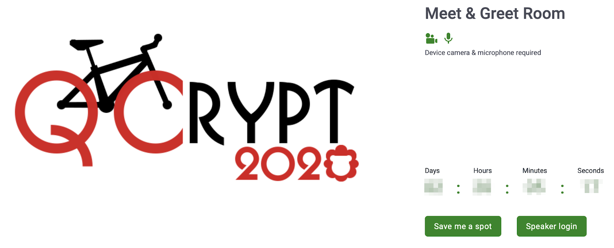
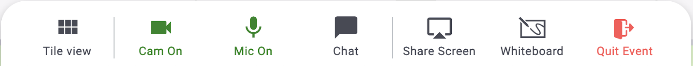
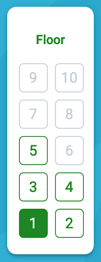
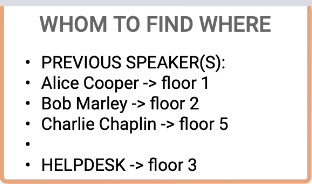

Instructions for QCrypt 2020 participants
The Zoom Webinar
The scientific presentations take place as a Zoom Webinar. Use the link in the invitation email (sent on Saturday, 8 Aug 2020) to access the webinar. You are then prompted to fill in your name and email address.
NB: It is required that you represent yourself by the full name that you use for your professional work (https://2020.qcrypt.net/code-of-conduct-online/).
During presentations, participants can use the Q&A functionality to pose questions to the speaker. For contributed-talk sessions with multiple speakers, make sure you address the question to a particular speaker. The session chair will then read out (some of) these questions to the speaker. Alternatively, there is the possibility to raise your hand; the session chair may then temporarily unmute you so that you can ask your question.
There is also a chat feature for private and public chatting. Updating your local zoom client to the latest version is generally advised.
The YouTube Channel
The Zoom Webinar is streamed live to YouTube, and recordings of all talks are available on the QCrypt Conference YouTube channel: https://www.youtube.com/channel/UClpn9CxuZPHw3nzhdv0m3Hw/videos . You can already find the pre-recorded videos of the contributed talks on the channel.
The Slack Workspace
The QCrypt Slack workspace enables interaction that is not restricted to the time of the day when the conference is actively running. For instance, participants that were not able to be present at the live presentation and Q&A can this way still ask questions about a presentation. Or, use the Slack private chat to agree on a time and place to meet in the Meet-&-Greet Room. Use the link from the invitation email (sent on Saturday, 8 Aug 2020) to subscribe to the QCrypt Slack channel.
The Meet-&-Greet Room
The breaks between the scientific presentations, as well as the two poster sessions, take place in the QCrypt 2020 Meet-&-Greet Room. This room is designed to enable, and hopefully stimulate, interaction between the participants. Beyond that, it offers the possibility for (more) private discussions with the speakers, and participants can visit the Sponsor Lounges and check out the pin boards there, and talk to the corresponding company- and institute-representatives.
The Meet-&-Greet Room (powered by remo.co) is purely browser based. Up-to-date versions of Firefox, Chrome and Safari are supported; other browsers may not work (well). Visit https://geartest.remo.co to verify that your system satisfied the requirements. To use the video-talking feature, you must grant your browser access to your microphone and camera.
Below are detailed instructions on how to access the QCrypt 2020 Meet-&-Greet Room, and how to use it.
How to: Register for and Access the Meet-&-Greet Room
Use the link in the invitation email (sent on Saturday, 8 Aug 2020) to access the event landing page, and click “Save me a spot” if the event has not started yet, or “Sign in to join event” in case the event is already running. 
Enter your email address and create an account, or log in to your account if you are already registered.
When you are back on the event landing page, click on the icon in the upper right corner to access your profile. There, you can add a profile picture; this will make it easier for fellow QCrypt attendees to recognize you in the Meet-&-Greet Room. You can also fill in your affiliation, add a link to your LinkedIn profile, and more. NB: It is required that you represent yourself by the full name that you use for your professional work (https://2020.qcrypt.net/code-of-conduct-online/)
- Once the event has started, click “Join event now” on the event landing page and read the explanations and follow the instructions, or select “skip for now” for immediate access. You may also get the option to test your camera and microphone. If you encounter problems joining then send a message to the QCrypt Slack helpdesk channel and an email to helpdesk2020@qcrypt.net.
How to: Use the Meet-&-Greet Room
Arriving in the room. Once you have entered the room, you find yourself being placed at one of the tables (or “lounges”) in the room. Make sure your camera and microphone are on; the switches are located in the toolbar at the bottom of the page. 
Talking to people. With your camera and mic on, you can now video-talk to the other participants at the table (if they have camera and mic on as well). Click on “Tile view” to have large-size video feeds, and switch back to the map view by clicking on “Back to Floor”. NB: You can only talk to the people that are sitting at the same table as you; vice versa, only the people at your table can overhear your conversation.
Moving around tables. You can freely move to any table you wish. Simply double-click on the table where you want to go; you’re now part of the conversation at this table. During the two poster sessions, the tables serve as places where the posters are presented. Go to any table to talk to the author/presenter of the corresponding poster and/or check out the poster by clicking on “Whiteboard” in the toolbar once you have joined the table.
Changing floors. The Meet-&-Greet Room features multiple floors. Use the elevator buttons at the very left to move to a different floor.
Special tables/lounges. Along the left and the right wall of the room are special tables (or “lounges”), some of which have a dedicated purpose.
The lounges on the left are “Sponsor Lounges”. Visit these lounges to talk to a representative of the sponsoring institute/company (if present) and/or to check out their pin board. Once in the lounge, you can view the pin board by clicking on “Whiteboard” in the toolbar at the bottom of the page. 
Centered in the room, on floors 1, 2, 4 and 5, you find a “Meet-the-Speaker” lounge. In one of these lounges, the previous speaker(s) is available for further questions and discussions. The info board on the top right tells you which floor to go to find which speaker.
On floor 3 in the center is the “Meet the Organizers / Help Desk”. Here, you can talk to the organizers and their staff.
All other places, like the “Snack Bar”, can be freely used to meet up with and talk to other participants.
Update your profile. If you wish to update your profile, e.g. add a profile picture and/or your affiliation, then click on the drop-down menu in the upper left corner.
Screen sharing. You can use the “Share Screen” button in the toolbar to share your screen with the people at your table (and only with the people at your table).
Chat. You can use the chat function in the toolbar to send a message to:
- all the participants present in the room,
- to the people at your table,
- or to a particular participant. NB: The chat shows all participants that have ever been in the room, and not only those that are currently present. Unfortunately, there is no possibility to see who is currently present and who is not.
Need help. If you need help then visit our Help Desk on the 3rd floor and talk to our staff, or send a message to the QCrypt Slack helpdesk channer. There is also a “Need help?” button on the lower left corner; this is the support from the provider of the platform (remo.co). Feel free to use; they are generally fast and competent.
Leave. Exit the Meet-&-Greet Room by clicking on the “Quit Event” button in the toolbar.
General format
The online edition of QCrypt 2020 will have a similar format than other conferences such as Eurocrypt 20 and PKC 20 that were recently held online. The authors of accepted papers are asked to prepare and upload a 20-25 minute video of their talks that will be available on our YouTube channel several days before the conference.
From Monday, 10 August to Friday, 14 August 2020,
- the main program of the conference takes place as zoom webinar,
- the poster sessions and networking breaks will take place in a virtual Meet & Greet Room (featured by https://remo.co),
- participants can talk to each other on Slack.
All partipants of QCrypt 2020 are bound to the code of conduct which in particular states that they have to represent themselves by the full name that they use for their professional work. Violations of the code of conduct should be reported as indicated here.
Tutorial talks, Invited talks
The tutorial and invited talks are given live on the zoom webinar, and simultaneously streamed to YouTube. Webinar participants can ask questions via the zoom Q&A functionality. The speaker will answer the most important questions after the talk on zoom. After each session, the speaker is moving over to the Meet & Greet Room and will be available there to answer more individual questions (as it is usually the case at real-life conferences). The tutorial and invited talks are recorded and will be made available on the YouTube channel for offline watching.
Contributed talks
The list of accepted papers is here. After making a 20-25 minute video of their talks available before the conference, the live “online” part of presenting contributed articles is divided into thematic sessions on the zoom webinar. In each session, 3 to 4 contributed articles will be presented by means of a 5 minute talk each, followed by a panel discussion involving the speakers of the session and moderated by some members of the program committee. After each session, the speakers are moving over to the Meet & Greet Room and will be available there to answer more individual questions.
Poster sessions
The list of accepted posters with PDFs is now available on this website. The two poster sessions take place in the Meet & Greet Room. More details will be provided later.
Breaks
The breaks between the talks can be spent in the Meet & Greet Room. Very much as with a physical conference, there you can meet and chat with your colleagues, corner the speaker from the previous session for (more) questions, visit the sponsor booths, and make new acquaintances. This is also the venue where the poster sessions take place.
Schedule
The conference schedule is now available.
Registration
Thanks to our sponsors, there is no registration fee for participating in the online edition of QCrypt 2020. Note that by registering to QCrypt, you are considered a participant of QCrypt 2020 and are thereby bound to the code of conduct.
Register hereThe email address you indicate during the registration will be added to an email list of registered participants of QCrypt 2020. In the week before the conference, we will send you via email the links to the zoom webinar and the virtual meet & greet room (for the poster sessions and the social breaks).
Google and YouTube not accessible
For participants having trouble to access our registration form, please send us an email to at helpdesk2020@qcrypt.net and we will register you manually.
In case you cannot access the recorded contributed talks on YouTube, download and watch them from SurfDrive instead.
Instructions for authors of accepted papers
We ask the authors of each accepted paper to prepare a 20-25 minute video of their talk by the deadline of Monday, 3 August 2020, following these guidelines.
Set the file name of the video to be ‘Talk’ followed by the submission number followed by the last name of the presenting author (e.g. Talk123Smith.mp4).
Upload the talk video to https://surfdrive.surf.nl/files/index.php/s/SerEi1nOmmxNP0s.
We will upload your talk to our YouTube channel and make it available from our webpage.
Instructions for zoom webinar speakers (tutorial, invited, contributed)
Note that all zoom webinars streamed live to YouTube, and recordings of all talks are available on the QCrypt Conference YouTube channel: https://www.youtube.com/channel/UClpn9CxuZPHw3nzhdv0m3Hw/videos
PDF instructions for speakersPlease upload your slides to https://surfdrive.surf.nl/files/index.php/s/SerEi1nOmmxNP0s to make them available from our website.
Instructions for session chairs
PDF instructions for session chairsInstructions for authors of accepted posters
We ask the authors of each accepted poster to prepare their poster and save it to a pdf file by the deadline of Monday, 3 August 2020.
(updated 4 Aug 2020) Set the file name of the poster to be ‘QCrypt2020Poster’ followed by the three-digit submission number (suitably padded with leading 0s) followed by the last name of the presenting author (e.g. QCrypt2020Poster012Smith.pdf).
Upload the poster to https://surfdrive.surf.nl/files/index.php/s/SerEi1nOmmxNP0s.
Posters are now available at here
During poster session: PDF instructions for poster presenters
Follow us on Twitter
Follow us on Twitter and tweet about QCrypt 2020 using the hashtag #qcrypt2020 .
Questions
If you have quetions, you can ask them on the #helpdesk channel on slack, or email to helpdesk2020@qcrypt.net